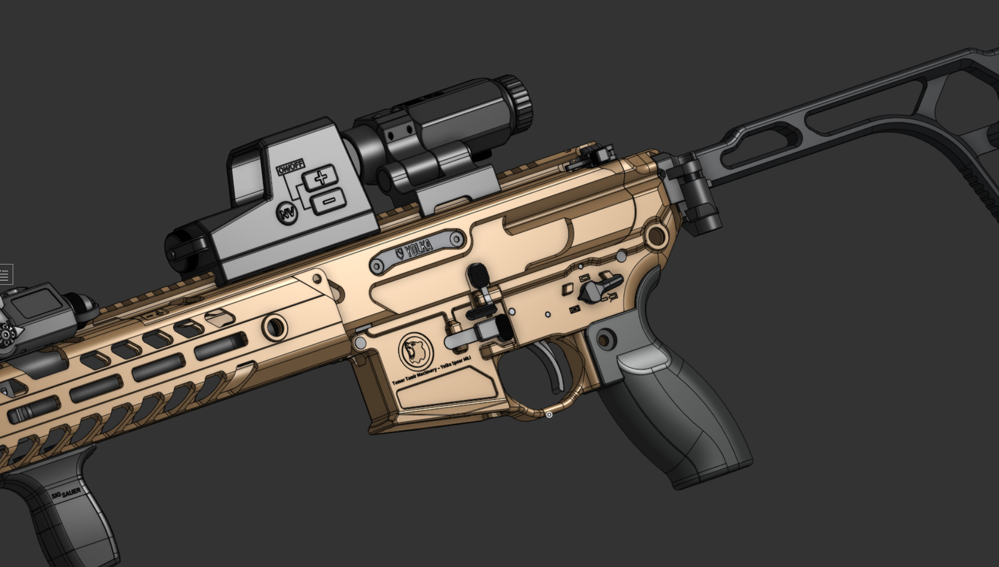
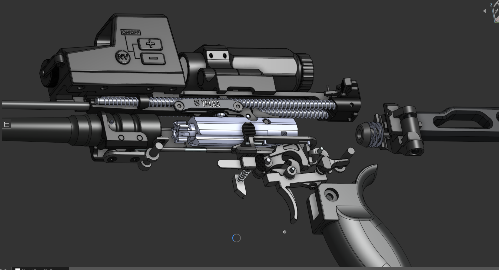

Unmatched Lethality & Ballistic Dominance
.227 Fury · Overmatch at range · In‑house at TTM
The TTM SIG SPEAR is not merely a rifle; it is a declaration of battlefield superiority. Spearheaded by Lead Engineer Yoni Shapiro, this program was driven by a single directive: create a platform that renders current‑generation body armor obsolete. Shapiro's design architecture focuses on maximizing the potential of high‑pressure ammunition, delivering kinetic energy that drastically outperforms legacy 5.56 and 7.62 platforms.
Under Shapiro's technical oversight, TTM achieved a synthesis of recoil mitigation and raw power. From proprietary gas‑piston tolerances to integrated suppressor flow dynamics, every micron of this rifle was engineered at TTM to dominate the engagement zone.
Back to all projects